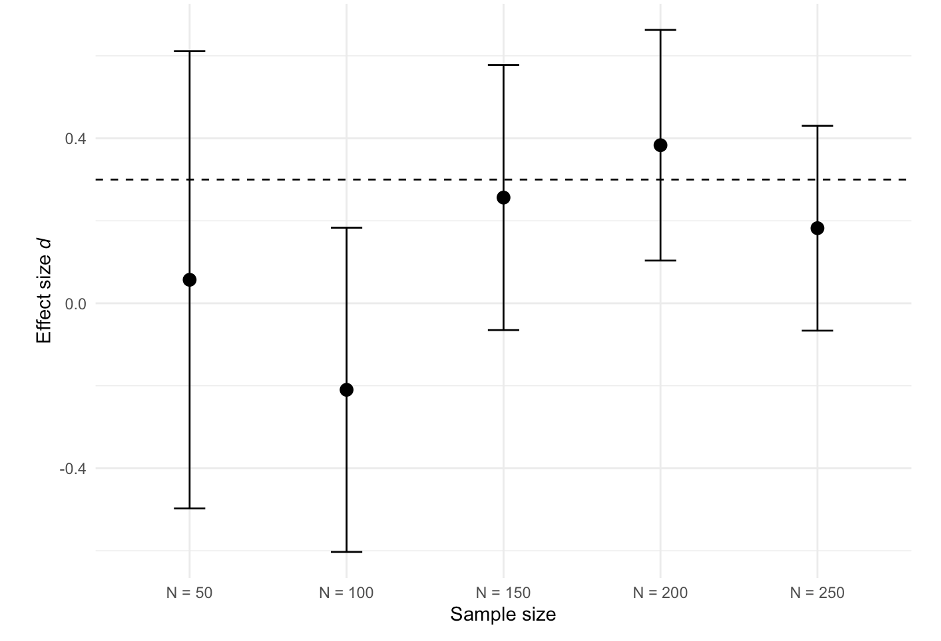
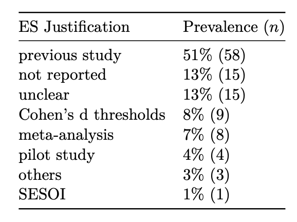
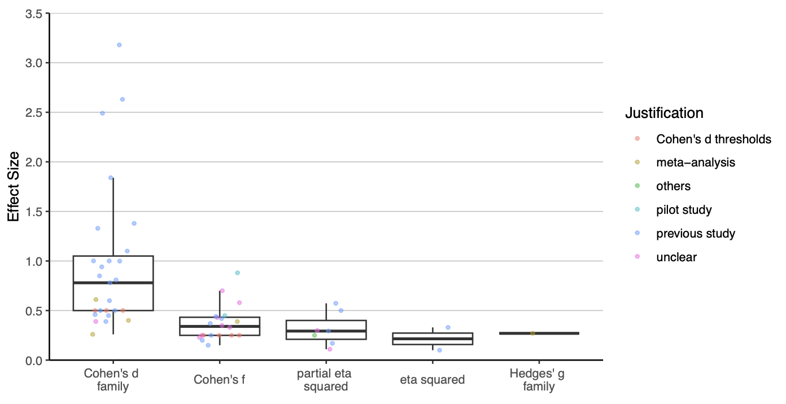
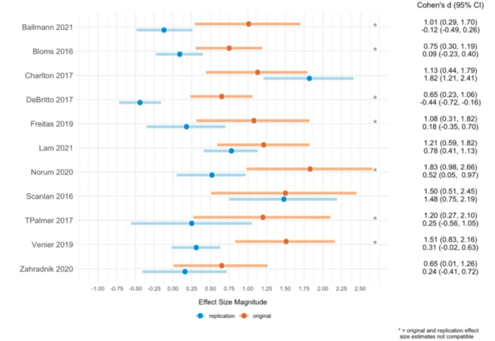
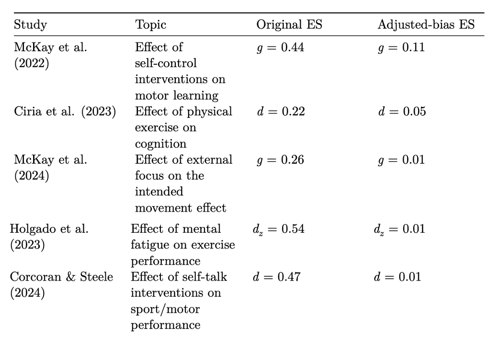
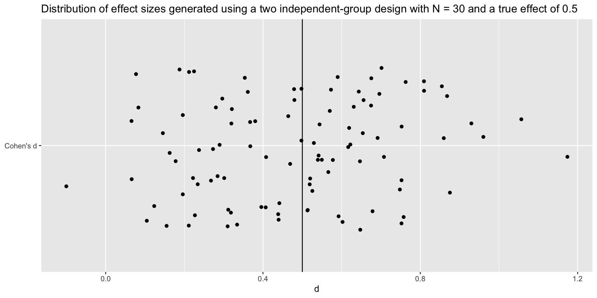
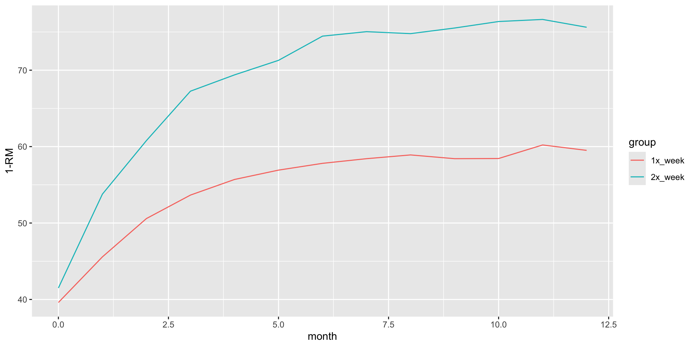
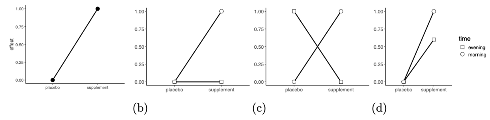

| type_effect_size | effect_size | critical_effect_size |
|---|---|---|
| d | 0.25 | 0.62 |
| g | 0.24 | 0.60 |
From Guesswork to Rigor: Improving Power Analysis in Sports and Exercise Sciences
Cristian Mesquida
2026-06-25
Overview
- The importance of statistical power
- The current state of power analysis in sports and exercise science
- Strategies for improvement
How to design informative studies?
- Address relevant questions
- Use rigorous study designs
- Apply appropriate statistical analysis
- Controlling for type I and type II error rates in the Null-hypothesis testing framework
How do we control the type II error rate?
By conducting an a priori power analysis
\[n = 2 * (\frac{Δ}{\sigma})^2 * (Z_{\alpha/2} + Z_{\beta})^2\]
\(n\): the number of participants
Δ: the expected difference
\(\sigma\): the presumed standard deviation
\(\alpha\) : the probability of type I error
\(\beta\): the probability of type II error
Studies designed with inadequate power can be unethical
“21. Medical research involving human participants must have a scientifically sound and rigorous design and execution that are likely to produce reliable, valid, and valuable knowledge and avoid research waste.”
— (World Medical Association 2025)
Designing studies with high statistical power increase the informative value of studies
1- Increased probability of detecting true effects
Design a study that has a high probability of detecting the intervention effect of interest
That is, you do not want to fail to develop a new treatment
2- More informative non-significant results
Study A designed with 90% to detect Δ yields a null finding (\(p\) > \(\alpha\))
Study B designed with 30% to detect Δ yields a null finding (\(p\) > \(\alpha\))
What can we learn from study A and study B?
3- Reduced uncertainty (narrower 95% CI)

Most studies are designed with low-statistical power
In a sample of 350 hypothesis-testing studies:
Typical sample size in the field is about 35 participants (Mesquida et al. 2025b)
Average statistical power of 11% (Mesquida et al. 2025a)
Why statistical power is so low?
Assess the prevalence, reproducibility and quality of power analyses (Mesquida et al. 2025b)
350 hypothesis-testing studies published across 10 journals
Low prevalence
About 40% of hypothesis-testing studies reported an a priori power analysis (Mesquida et al. 2025b)
Low reproducibility

Low reproducibility
Studies often failed to report all required information
Statistical test and selected effect size were often missing
Justification of effect sizes

Distribution of effect sizes in power analysis

Quality
If sample sizes are so small (~35), shouldn’t we expect that including an a priori power analyses will lead to larger sample sizes?
Reporting an a priori power analysis was not associated with larger sample sizes or a higher proportion of supported hypotheses
Potential reasons
- A priori power analyses are conducted in a way that yields the sample size researchers aim to recruit — also known as “sample size samba” — (Schulz and Grimes 2005)
Potential reasons
- Inflated effect sizes (Murphy et al. 2025)
Low statistical power + selection bias → inflated effect sizes
A median decrease of 75% in replicated effect sizes compared to the original findings (Murphy et al. 2025)
Results of the Sport Science Replication Project (Murphy et al. 2025)

Inflated ES in meta-analyses

Potential reasons
Using an effect size estimate that does not match the intervention effect (difference across the PICOS dimensions; estimand)
Using a statistical test that does not match statistical test used to evaluate the hypothesis
How to improve the quality of power analysis?
- Better training
- Sampling variability
- Critical effect size
- Improve justification/interpretation of effect sizes
- PICOS/estimand framework
- Automatation
- More collaboration with (applied) statisticians and experts
The biggest challenge
- The true Δ is unknown, so researchers need to make an assumption about the true size of Δ
Expected Δ
Because Δ is unknown, researchers need to assume it
Sports scientists often rely on single studies, meta-analysis or pilot studies
However, each of these approaches comes with its own limitations
Estimated Δ vs. population Δ
- We collect a sample from a larger population
- Effect sizes from a study are estimates of the true population effect
- Estimates vary due to sampling error
- Smaller samples → more sampling error
- More sampling error → less precise effect size estimates
Population Δ = 0.5

Critical effect size
The smallest detectable effect that can reach statistical significance (Perugini et al. 2025)
Its value depends on the given sample size, \(\alpha\), and test statistic
The typical sample size in sports and exercise science is ~30 participants
What is the critical effect size for a two-group study with an \(N\) of 30 and \(\alpha\) of 0.05?
Studies often differ in critical aspects
The PICOS framework:
Population
Intervention
Comparator
Outcome
Study design/statistical test
Population
Elite athletes, highly-trained athletes, sedentary participants, patients, students, etc.
Intervention effects may vary across populations.
For example, a training intervention is likely to produce greater performance improvements in untrained or less trained individuals compared to highly trained athletes.
Intervention
Dose, intensity, duration, type of intervention, frequency, etc.
All these variables can impact the intervention effect.

Comparator
- Placebo, active comparator (standard procedure), no-treatment control, dose-response comparator, historic comparator.
- For example, comparing a new intervention against standard intervention might result in a smaller effect compared with a no-treatment control.
Outcome
What outcome was used to measure the impact of the intervention?
\(VO_{2MAX}\), velocity at lactate threshold 2, countermovement jump (CMJ) height, 10-m sprint velocity, etc.
The same intervention may yield different results depending on the measured outcome.
For example, plyometric training is likely to improve jump height to a larger extant than 10-m sprint velocity.
Study design
Pre-post design, parallel control group design, randomized controlled trial (RCT), etc.
Different study designs are associated with varying risks of bias; for example, observational studies generally have a higher risk of bias compared to randomized controlled trials (RCTs)
The effect size depends on the type of interaction

The interaction effect size can be expressed as a difference-in-difference:
\[d_{\mathrm{int}} = \frac{(E_1 - C_1)}{\mathrm{Pooled\ SD}} - \frac{(E_2 - C_2)}{\mathrm{Pooled\ SD}} = \frac{(E_1 - C_1) - (E_2 - C_2)}{2 \times \mathrm{Pooled\ SD}}\]
\[ Study_A: d_{\mathrm{int}} = \frac{(1-0) - (0-0)}{2 \times 2} = 0.5 \] \[ Study_B: d_{\mathrm{int}} = \frac{(1-0) - (0-1)}{2 \times 2} = 0.25 \] \[ Study_C: d_{\mathrm{int}} = \frac{(1-0) - (0-0)}{2 \times 2} = 0.5 \] \[ Study_D: d_{\mathrm{int}} = \frac{(1-0) - (0.6-0)}{2 \times 2} = 0.1 \]
Using the wrong intervention effect
Study aim: to determine whether acute moderate hypoxia, compared to normoxia, had no detrimental effect on power output during 4 x 30-s all-out efforts.
Sample size justification:
“The sample size was estimated using a power analysis software G*Power (version 3.1.9.2; Bonn University, Bonn, Germany) based on the mean effect (d = 3.18) of the within-condition decrement to peak and mean power output during repeated 30-s Wingate efforts.10 The power analysis resulted in a calculated total sample size of 4 participants.”
How d = 3.18 was calculated

Automatation
The power module in Metacheck can detect and classify power analyses and their components
Output
[
{
"text": "On the basis of simulations over a range of
expected effect sizes for contrasts of fMRI activity, we
estimated that a sample size of 24 would provide .80
power at a conservative brainwide alpha threshold of
.002",
"power_type": "sensitivity",
"statistical_test": "other",
"statistical_test_other": null,
"sample_size": 24,
"alpha_level": 0.002,
"power": 0.8,
"effect_size": null,
"effect_size_metric": null,
"effect_size_metric_other": null,
"software": null
},
{
"text": "The effect size from that study implied
that a sample size of 72 loan requests would be required
to achieve .80 power at an alpha level of .05",
"power_type": "apriori",
"statistical_test": "other",
"statistical_test_other": null,
"sample_size": 72,
"alpha_level": 0.05,
"power": 0.8,
"effect_size": null,
"effect_size_metric": null,
"effect_size_metric_other": null,
"software": null
}
]Thanks for your attention!
References
Mesquida, Cristian, Jennifer Murphy, Joe Warne, and Daniël Lakens. 2025a. On the Replicability of Sports and Exercise Science Research: Assessing the Prevalence of Publication Bias and Studies with Underpowered Designs by a z-Curve Analysis. https://doi.org/10.51224/SRXIV.534.
Mesquida, Cristian, Jennifer Murphy, Joe Warne, and Daniël Lakens. 2025b. Prevalence, Reporting Practices, and Methodological Quality of a Priori Power Analyses in Sports and Exercise Science Research. July. https://doi.org/10.51224/SRXIV.575.
Murphy, Jennifer, Aaron R. Caldwell, Cristian Mesquida, et al. 2025. “Estimating the Replicability of Sports and Exercise Science Research.” Sports Medicine, ahead of print. https://doi.org/10.1007/s40279-025-02201-w.
Perugini, Ambra, Filippo Gambarota, Enrico Toffalini, et al. 2025. “The Benefits of Reporting Critical-Effect-Size Values.” Advances in Methods and Practices in Psychological Science 8 (2): 25152459251335298. https://doi.org/10.1177/25152459251335298.
Schulz, Kenneth F., and David A. Grimes. 2005. “Sample Size Calculations in Randomised Trials: Mandatory and Mystical.” The Lancet 365 (9467): 1348–53. https://doi.org/10.1016/S0140-6736(05)61034-3.
World Medical Association. 2025. “World Medical Association Declaration of Helsinki: Ethical Principles for Medical Research Involving Human Participants.” JAMA 333 (1): 71–74. https://doi.org/10.1001/jama.2024.21972.